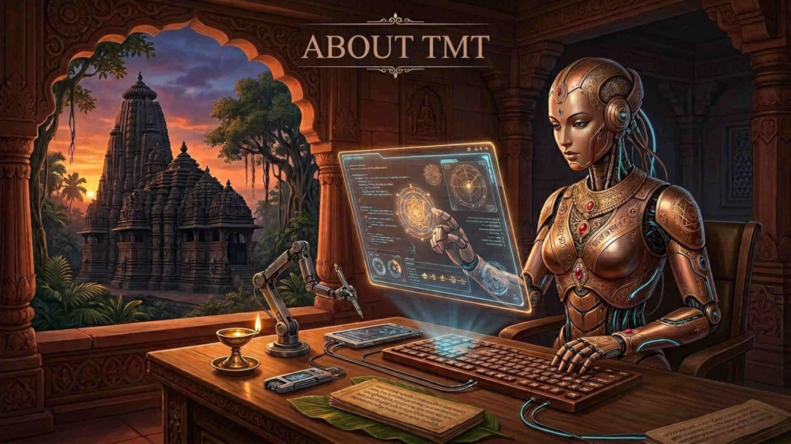

Tech Meets Tradition Like the Linux Penguin (Tux), I stand for open access to knowledge. The TechMeetsTradition YouTube channel is 100% non-commercial, and un-monetized. Voice-over narrations were created via Google AI Studio and ttsmaker.com, AI still image generations using Google Flow (via Nano Banana), Whisk (via Imagen4), and Mixboard (via Nano Banana), visual prompt creation and text assistance by Gemini. Join me for fun facts and illustrated adventures created through modern technology. Don't forget to like, share, and subscribe to TechMeetsTradition!
My mission is to deliver knowledge in a beautiful, and fun way that is accessible to everyone. Using AI-generated art and narration, as well as my own photographs and videos, I transform informative facts and concepts into engaging visual journeys.